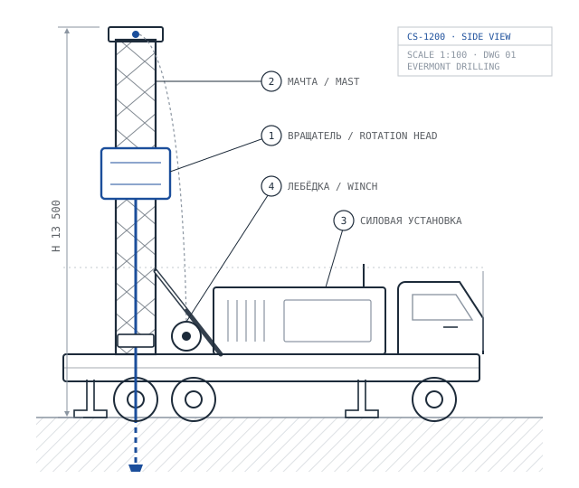

Буровые услуги
Бурим разведочные и геологоразведочные скважины своими установками и бригадами. Технологию подбираем под геологию участка и требования к керну.
1 из 6
Колонковое бурение
Бурение с отбором керна алмазными коронками и съёмными керноприёмниками (wireline). Основной метод, когда нужен керн для оценки запасов.
Где применяется
- Разведка рудных месторождений
- Оценка запасов по KAZRC и JORC
- Инженерно-геологические изыскания
- Наклонные скважины
Технические возможности
| Глубина | до 1 200 м (NQ) |
|---|---|
| Типоразмеры | BQ, NQ, HQ, PQ |
| Диаметр керна | 36,5–85 мм |
| Угол бурения | 45–90° |
| Выход керна | от 95 % |
Проекты
- Akshiyli Cu-Au
- Казахстан, с июля 2026, в работе

2 из 6
RC drilling
Бурение с обратной циркуляцией. Шлам поднимается по внутренней трубе двойной колонны, пробу отбирают с каждого метра. Быстрее и дешевле колонкового, но керна не даёт.
Где применяется
- Поисково-оценочные работы
- Сгущение разведочной сети
- Эксплуатационная разведка карьеров
- Проходка до колонкового интервала
Технические возможности
| Глубина | до 450 м |
|---|---|
| Диаметр бурения | 114–140 мм |
| Интервал опробования | 1 м |
| Производительность | до 150 м за смену |

3 из 6
Разведочное бурение
Весь буровой этап геологоразведочного проекта: проектируем сеть скважин, бурим, делаем каротаж, документируем керн и передаём данные геологам заказчика.
Где применяется
- Лицензионные участки на стадии разведки
- Медь, золото, полиметаллы, железо
- Нерудное сырьё
- Подготовка к оценке ресурсов
Что входит
| Методы бурения | Колонковое и RC |
|---|---|
| Сопутствующие работы | Каротаж, опробование, описание керна |
| Отчётность | Ежесуточная и итоговая |
Проекты
- Akshiyli Cu-Au
- Казахстан, 2026

4 из 6
Поверхностное бурение
Неглубокие скважины с поверхности для геохимического опробования, картирования и инженерных изысканий.
Технические возможности
| Глубина | до 100 м |
|---|---|
| Диаметр бурения | 76–200 мм |
| Способы | Шнековое, пневмоударное |

5 из 6
Подземное бурение
Колонковое бурение из горных выработок компактными установками. Нужно для доразведки флангов и глубоких горизонтов на действующих рудниках.
Технические возможности
| Глубина | до 600 м |
|---|---|
| Угол бурения | от −90° до +90° |
| Привод | Электрогидравлический |
Установки

6 из 6
Другие виды бурения
Гидрогеологические, технические и инженерные скважины. Список видов бурения редактируется в CMS и будет пополняться.
- Гидрогеологические скважины
- Инженерные изыскания
- Технические скважины
- Нестандартные задачи
Технические параметры на этой странице примерные. Точные значения согласуем с техническим отделом.
Нужна смета на бурение?
Пришлите координаты участка, глубины и требования к керну. Подготовим технико-коммерческое предложение.